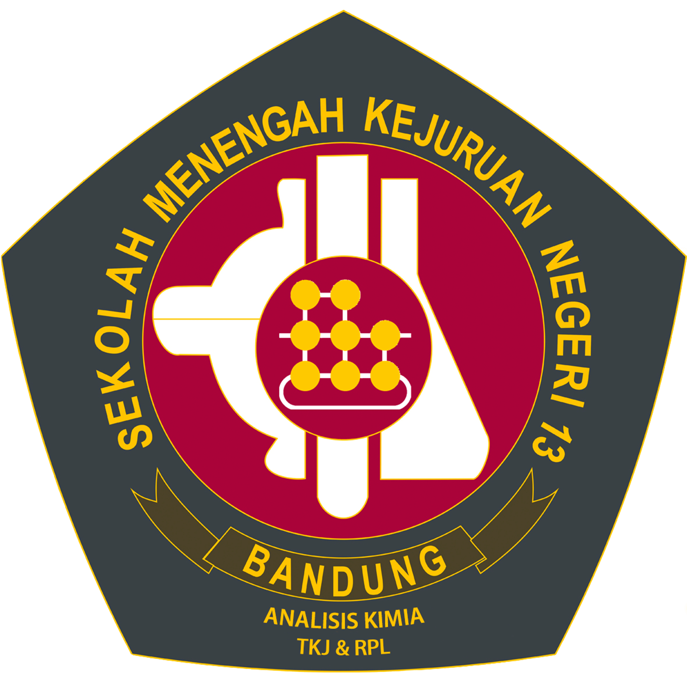

|  | SMKN 13 Bandung |
* | Tentang Sekolah | | Input Siswa | | Input Guru | | Data Siswa | | Data Guru | | Alamat & Kontak | |
Menengah Kejuruan Negeri 13 Bandung adalah sekolah tingkat menengah atas yang mendidik siswanya untuk memiliki keahlian di bidang Kimia Analisis, Teknologi Komputer Jaringan dan Rekayasa Perangkat Lunak.
SMK Negeri 13 Bandung berdiri sejak 1938, bermula dari Pendidikan Analis Kimia dibawah pengelolaan Departemen Kimia Institut Teknologi Bandung dengan nama Sekolah Analis ITB yang dipelopori oleh Prof. C.O. Schaeffer. Kegiatan pembelajarannya dilaksanakan di Kampus ITB Jl. Ganesha No 10 Bandung.
Pada tahun 1988 pengelolaan Sekolah Analis Kimia ITB dialihkan ke Direktorat Pendidikan Kejuruan Departemen Pendidikan dan Kebudayaan berdasarkan Surat Keputusan Menteri Pendidikan dan Kebudayaan No 0454/1988 tertanggal 8 September 1988 dan berganti nama menjadi Sekolah Menengah Teknik Kimia (SMT Kimia) dengan lokasi di Jl. Jenderal Sudirman No 125 Bandung.
Selanjutnya berdasarkan Surat Keputusan Menteri Pendidikan dan Kebudayaan RI No 036/1997 tertanggal 7 Maret 1997 tentang perubahan Nomenklatur SMKTA menjadi SMK serta Organisasi dan Tata Kerja Sekolah Menengah Kejuruan (SMK), maka pada tahun 1998 SMT Kimia berubah nama menjadi SMK Negeri 13 Bandung dengan program keahlian Kimia Analisis sekaligus menempati bangunan baru di Jl Soekarno-Hatta Km 10 Bandung.
Selanjutnya berdasarkan Surat Keputusan Menteri Pendidikan dan Kebudayaan RI No 036/1997 tertanggal 7 Maret 1997 tentang perubahan Nomenklatur SMKTA menjadi SMK serta Organisasi dan Tata Kerja Sekolah Menengah Kejuruan (SMK), maka pada tahun 1998 SMT Kimia berubah nama menjadi SMK Negeri 13 Bandung dengan program keahlian Kimia Analisis sekaligus menempati bangunan baru di Jl Soekarno-Hatta Km 10 Bandung.